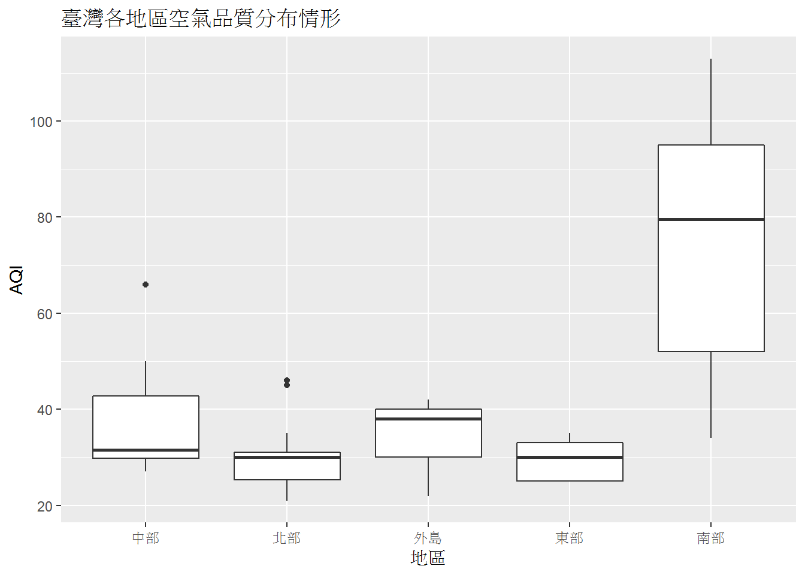

Chapter 7 各地區觀測站測得的空氣品質分布情形為何？
7.1 比較各地區觀測站測得的空氣品質分布
- 比較+分布
- 在一張圖上，同時顯示多個分布圖
- 將不同地區放置於橫軸上的各個部分
- 縱軸表示分布情形
7.2 使用盒狀圖畫出各地區觀測站測得的空氣品質分布
- geom_boxplot()盒狀圖
- 盒子中的橫線表示中位數，上下緣分別代表第三和第一四分位數
- 盒子的高是四分位距，代表資料的分散程度，盒子愈高表示資料愈分散
- 盒子上下的直線外的點表示極端值或離群值
aqi_data %>%
filter(!is.na(AQI)) %>%
ggplot(aes(x=Area, y=AQI)) +
geom_boxplot() +
labs(x="地區", y="AQI", title="各地區空氣品質指標", subtitle="台灣南部空氣品質較差")
7.3 以不同的顏色呈現各地區的AQI分布
aqi_data %>%
filter(!is.na(AQI)) %>%
ggplot(aes(x=Area, y=AQI, color=Area)) +
geom_boxplot() +
labs(x="地區", y="AQI", title="各地區空氣品質指標", subtitle="台灣南部空氣品質較差")
7.4 取消圖例(legend)
- theme(legend.position=“none”)取消圖例
aqi_data %>%
filter(!is.na(AQI)) %>%
ggplot(aes(x=Area, y=AQI, color=Area)) +
geom_boxplot() +
labs(x="地區", y="AQI", title="各地區空氣品質指標", subtitle="台灣南部空氣品質較差") +
theme(legend.position="none")
7.5 使用小提琴圖畫出各地區觀測站測得的空氣品質分布
- geom_violin()小提琴圖
- 小提琴的寬度表示資料在這個數值的分布情形，愈高的話分布的資料愈多
aqi_data %>%
filter(!is.na(AQI)) %>%
ggplot(aes(x=Area, y=AQI, color=Area)) +
geom_violin() +
labs(x="地區", y="AQI", title="各地區空氣品質指標", subtitle="台灣南部空氣品質較差") +
theme(legend.position="none")
7.6 使用點狀圖畫出各地區觀測站測得的空氣品質分布
*以各發文類型為x軸，將每一筆紀錄依據它們的按讚次數在相對應的發文類型上畫出一個點
aqi_data %>%
filter(!is.na(AQI)) %>%
ggplot(aes(x=Area, y=AQI, color=Area)) +
geom_jitter() +
labs(x="地區", y="AQI", color="空氣品質狀態", title="各地區空氣品質指標", subtitle="台灣南部空氣品質較差") * 不用geom_point()的原因是圖形上的點若是x和y軸座標相同的話，會重疊在一起
* geom_jitter()當x和y軸座標相同的話，會盡量繪製在附近，避免重疊。
* 不用geom_point()的原因是圖形上的點若是x和y軸座標相同的話，會重疊在一起
* geom_jitter()當x和y軸座標相同的話，會盡量繪製在附近，避免重疊。
7.7 修改顏色
- 將每個地區觀測站的AQI，依照不同狀態呈現
- 良好：綠色，普通：黃色，對敏感族群不健康：橙色
aqi_data %>%
filter(!is.na(AQI)) %>%
mutate(StatusColor=case_when(
Status=="良好"~ "green",
Status=="普通"~ "yellow",
Status=="對敏感族群不健康"~ "orange"
)) %>%
ggplot(aes(x=Area, y=AQI, color=StatusColor)) +
geom_jitter() +
labs(x="地區", y="AQI", title="各地區空氣品質指標", subtitle="台灣南部空氣品質較差") +
scale_color_identity()
7.8 修改背景顏色
aqi_data %>%
filter(!is.na(AQI)) %>%
mutate(StatusColor=case_when(
Status=="良好"~ "green",
Status=="普通"~ "yellow",
Status=="對敏感族群不健康"~ "orange"
)) %>%
ggplot(aes(x=Area, y=AQI, color=StatusColor)) +
geom_jitter() +
labs(x="地區", y="AQI", color="空氣品質狀態", title="各地區空氣品質指標", subtitle="台灣南部空氣品質較差") +
scale_color_identity()+
theme(panel.background=element_rect(fill="black"))